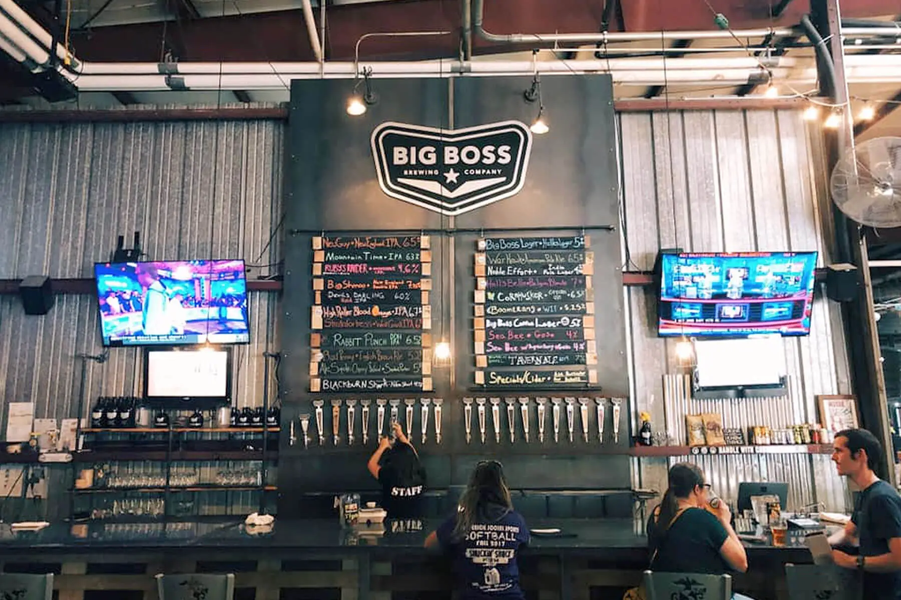

Big Boss Brewery

North Carloina and more specifically Raleigh North Carolina is famous the the quality and the quantity of brewerys. this is just one of them
- Experience: Adult fun, must be 21 years old or older to enjoy this location, great experience to meet the local flavors of North Carolina
- Cost: only for adults over 21 years old and each beer is paid but entry is free.
- More Information: Here